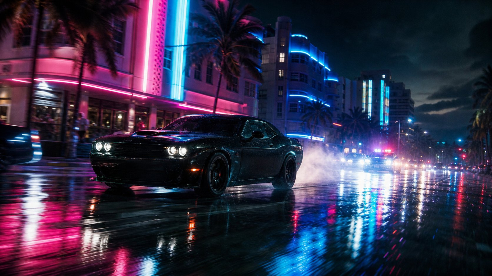
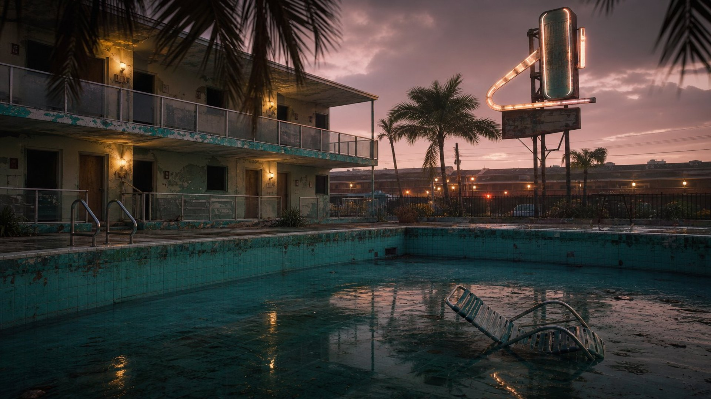
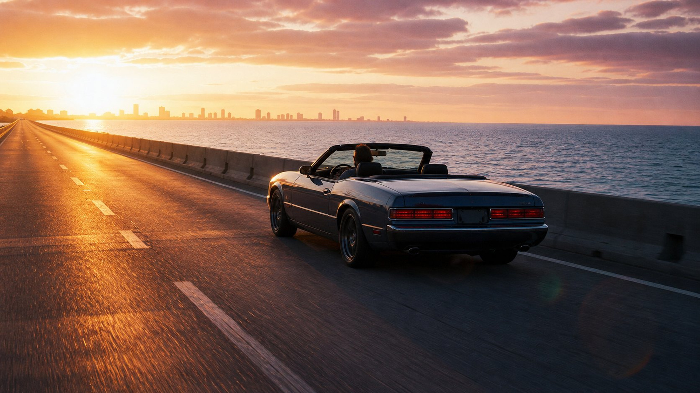

S4 · G1 · Missions · SPOILER
93 missions
en 5 chapitres
La liste complète, chapitre par chapitre, telle qu'elle apparaît dans l'onglet Story recap du jeu. Les noms qui révèlent un événement majeur sont masqués : trois emplacements restent protégés, et aucun contenu de fin n'est inventé.
Le décompte : 93, pas 91
Deux listes circulent depuis le 18/11 : 91 et 93. La différence tient à deux missions du chapitre 2. Le total retenu ici est celui du Story recap, repris par TalkEsport, Press Start et GameSpot.
93 missions
Total relevé dans l'onglet Story recap, à comparer aux 69 de GTA V et aux 104 de Red Dead Redemption 2. HST-01
5 chapitres
Chaque chapitre porte un titre ; le chapitre 3 est le plus long, le chapitre 5 le plus court. HST-07
Ordre souple
L'ordre du recap n'est pas une contrainte : plusieurs missions restent disponibles en parallèle. HST-05

HST-08.
22 missions · Just Like Paradise
Prologue au pénitencier, puis Jason dans les Keys. La rencontre des deux protagonistes a lieu à la onzième mission, Coming Home. HST-09
Just Like Paradise
22 missions- Prologue
- Gone Fishing
- Gear Up
- Just A Scratch
- Lab Fees
- Unwanted Attention
- Pipework
- Hey Arnold!
- Island Dreams
- Feng Shui
- Coming Home
- Buck Me
- Clean Up After Donnie
- Down To Earth
- Clear Skies
- Day Release
- Swamped
- [Nom masqué — spoiler]
- Recalibration
- Tourist Trap
- Home Sweet Home
- Discharge Time
13 missions · Paradise Lost
Le chapitre le plus court après le dernier. C'est ici que se cachent les deux missions manquantes des listes à 91 : Thrillbillies et Twist Wrist, Smash, Grab. HST-03
Paradise Lost
13 missions- What's In The Bag?
- Ambulance Chaser
- Just Moved In
- Girls' Trip
- Moses
- Daily Driver
- Slam Dunk
- Breakfast Run
- Coffee Break
- Afternoon Delight
- Thrillbillies
- Twist Wrist, Smash, Grab
- Checking Out
26 missions · Tits Ass Drug Money
Le chapitre le plus long, et celui des deux braquages majeurs : Sinfrontera National Bank puis The Cartel Heist. Les stratégies de braquage de la presse (Snap Gun, Dye Pack Jammer, camions blindés) s'appliquent surtout ici. HST-07 HST-10
Tits Ass Drug Money
26 missions- Welcome To Vice City
- Dealer's Choice
- Meet The Heders
- Dubious Provenance
- Mami Knows Best
- South Leonida Real Estate
- Tyrone
- Here, Kitty Kitty
- Kitter Litter Labs
- Car Service
- Top Billing
- Boobie Time
- First Impressions
- Crosstown Traffic
- Credit Check
- Steal The Zorrusso For Randy
- Sinfrontera National Bank
- Security Expert
- Ride Or Die
- Company Property
- The Missing Link
- Safe Word
- Cooties
- Bricked Up
- Hidden Charges
- The Cartel Heist

HST-06 et les détails sur la homepage. Les codes restent derrière un SpoilerToggle.
25 missions · Vice City, Baby
Le chapitre le plus dense en contenu annexe : c'est là que se concentrent les activités, l'économie et les braquages secondaires. Le vingt-cinquième nom est masqué.
Vice City, Baby
25 missions- Ocean Beach
- Another Life
- Company Cars
- Lawyer Up
- Party Hard
- Heavy Lifting
- Photo/Shoot
- Making Gainz
- Watch It
- Cash Injections
- Amateur Hour
- Dirty Work
- Too Much Baggage
- Adventures In Babysitting
- Fresh Evidence
- Power Play
- Child's Play
- Headliners
- Close Surveillance
- Delivery Method
- Team Building
- Fully Catered
- VCIA Takedown
- Sunset
- [Nom masqué — spoiler]
7 missions · Top of the World, Ma
Sept missions, dont Operation Savage Glory et Protective Custody. Le nom de la mission finale n'est publié par aucune rédaction consultée : il reste masqué ici aussi.
Top of the World, Ma
7 missions- Bird In The Hand
- Taking Liberties
- VC Baby
- Doggie Bag
- Operation Savage Glory
- Protective Custody
- [Mission finale — nom masqué]

Ce que l'on sait des trois emplacements masqués
- Chapitre 1, #18 : le nom est retiré de toutes les listes publiques ; GameSpot le remplace par [Spoiler].
- Chapitre 4, #25 : dernier nom du chapitre, retiré ; Press Start et TalkEsport le remplacent par une mention explicite.
- Chapitre 5, #7 : mission finale, retirée ; aucune rédaction n'en donne le titre.
Statut : EN ATTENTE · 19/11 HST-08. Aucune description de scène, aucun sort de personnage n'est reproduit ici.
Repères pratiques
Pas de replay de mission
Contrairement à GTA V et RDR2, aucune option de rejouer une mission terminée : il faut recharger une sauvegarde manuelle, avec 15 emplacements disponibles. HST-04
Combien de temps ?
GameSpot : au moins 65 heures pour la campagne, 90–100 heures avec les annexes, plus de 200 heures pour le 100 %. Press Start : un peu moins de 50 heures. HST-06